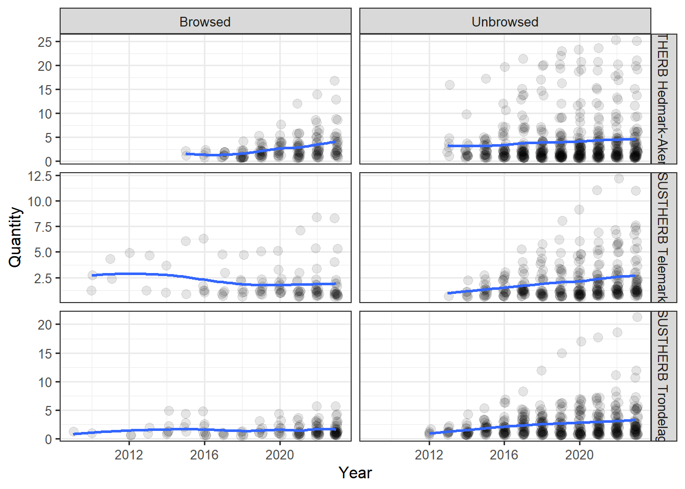
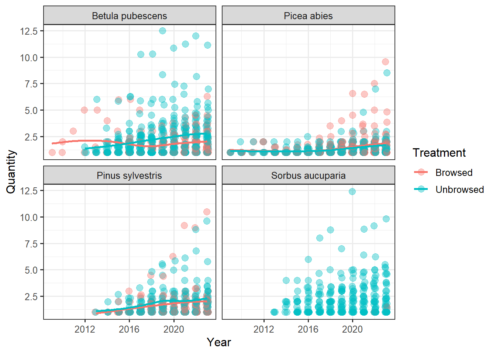
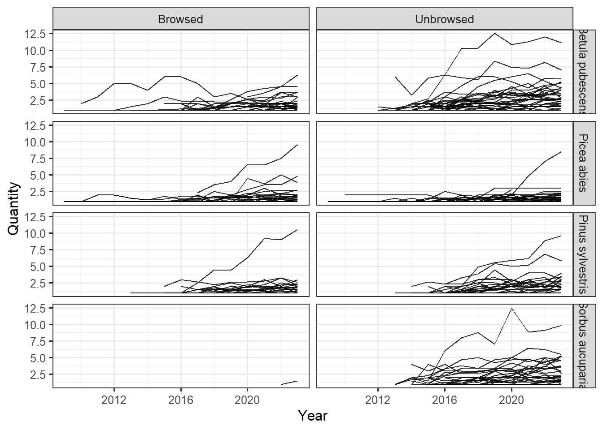
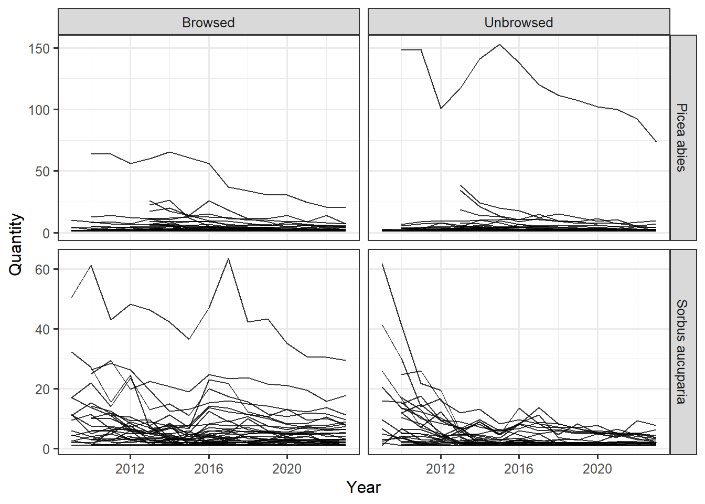
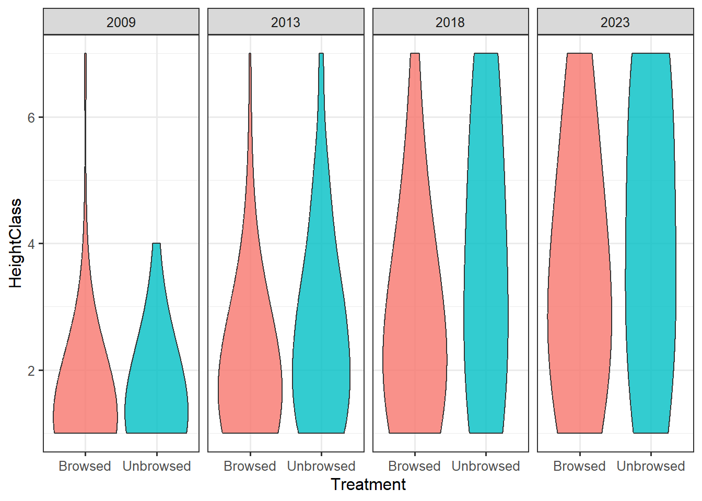
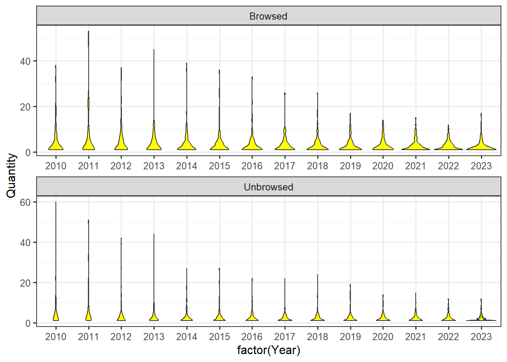
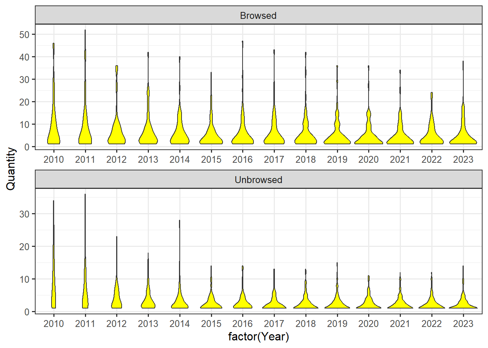

Plot NW, NE, SW, SE referes to plot names in Hedmark-Akershus and corresponds to OV (NW), OH (NE), NV (SW), NH (SE) in the two other regions.
Figures
Data %>%filter(Region=='SUSTHERB Telemark',EngelskNavn=='Pine' )%>%ggplot()+geom_violin(aes(x=factor(Year),y=Quantity ),fill ="yellow")+facet_wrap(.~Treatment,ncol=1,scales ="free")+theme_bw(base_size =12)

Number of Pine at plot level (circles) in Telemark: low spread, but reduction of plots with high abundance from 2017.No temporal trends in UB
Data %>%filter(Region=='SUSTHERB Telemark',EngelskNavn=='Spruce' )%>%ggplot()+geom_violin(aes(x=factor(Year),y=Quantity ),fill ="yellow")+facet_wrap(.~Treatment,ncol=1,scales ="free")+theme_bw(base_size =12)

Number of Spruce at plot level (circles) in Telemark: low spread, but reduction of plots with high abundance from 2016, but more in B vs UB
Data %>%filter(Region=='SUSTHERB Telemark',EngelskNavn=='Birch' )%>%ggplot()+geom_violin(aes(x=factor(Year),y=Quantity ),fill ="yellow")+facet_wrap(.~Treatment,ncol=1,scales ="free")+theme_bw(base_size =12)
Number of Birch at plot level (circles) in Telemark: low spread, but reduction of plots with high abundance in B from 2013.Less temporal trends in UB
Data %>%filter(Region=='SUSTHERB Telemark',EngelskNavn=='Rowan' )%>%ggplot()+geom_violin(aes(x=factor(Year),y=Quantity ),fill ="yellow")+facet_wrap(.~Treatment,ncol=1,scales ="free")+theme_bw(base_size =12)
Number of Rowan at plot level (circles) in Telemark: low spread, but no reduction of plots in B and UB
Data %>%filter(Region=='SUSTHERB Trondelag')%>%ggplot()+geom_violin(aes(x=factor(Year),y=Quantity ),fill ="yellow")+facet_wrap(.~Treatment,ncol=1,scales ="free")+theme_bw(base_size =10)
Number of trees at plot level (circles) in Trondelag: low spread, but reduction of plots with high abundance in B from 2013 and in UB
Data %>%filter(Region=='SUSTHERB Trondelag',EngelskNavn=='Pine' )%>%ggplot()+geom_violin(aes(x=factor(Year),y=Quantity ),fill ="yellow")+facet_wrap(.~Treatment,ncol=1,scales ="free")+theme_bw(base_size =10)
Number of Pine trees at plot level (circles) in Trondelag: low spread, but reduction of plots with high abundance in B and in UB from 2013
Data %>%filter(Region=='SUSTHERB Trondelag',EngelskNavn=='Spruce' )%>%ggplot()+geom_violin(aes(x=factor(Year),y=Quantity ),fill ="yellow")+facet_wrap(.~Treatment,ncol=1,scales ="free")+theme_bw(base_size =10)
Number of Spruce trees at plot level (circles) in Trondelag: low spread, but reduction of plots with high abundance in UB from 2013.Less temporal trends in B
Data %>%filter(Region=='SUSTHERB Trondelag',EngelskNavn=='Birch' )%>%ggplot()+geom_violin(aes(x=factor(Year),y=Quantity ),fill ="yellow")+facet_wrap(.~Treatment,ncol=1,scales ="free")+theme_bw(base_size =10)
Number of Birch trees at plot level (circles) in Trondelag: low spread, but no reduction of plots with high abundance in B from 2013.Increasing temporal trends in UB
Data %>%filter(Region=='SUSTHERB Trondelag',EngelskNavn=='Rowan' )%>%ggplot()+geom_violin(aes(x=factor(Year),y=Quantity ),fill ="yellow")+facet_wrap(.~Treatment,ncol=1,scales ="free")+theme_bw(base_size =10)
Number of rowan trees at plot level (circles) in Trondelag: low spread, but some reduction of plots with high abundance in B and UB
Data %>%#filter(Region=='SUSTHERB Telemark',EngelskNavn=='Pine' )%>%ggplot()+geom_violin(aes(x=factor(Year),y=Quantity ),fill ="yellow")+facet_wrap(.~Treatment,ncol=1,scales ="free")+theme_bw(base_size =10)
Number of pine trees at plot level (circles) in Telemark: low spread,
Data %>%filter(EngelskNavn=='Pine' )%>%ggplot()+geom_violin(aes(x=factor(Year),y=Quantity ),fill ="yellow")+facet_wrap(.~Treatment,ncol=1,scales ="free")+theme_bw(base_size =10)

Number of trees at plot level (circles) across all regions: low spread, but some reduction of plots with high abundance in B and UB from 2013
Data %>%filter(EngelskNavn=='Spruce' )%>%ggplot()+geom_violin(aes(x=factor(Year),y=Quantity ),fill ="yellow")+facet_wrap(.~Treatment,ncol=1,scales ="free")+theme_bw(base_size =10)

Number of spruce trees at plot level (circles) across all regions: low spread, but some reduction of plots with high abundance in B and UB
Data %>%filter(EngelskNavn=='Birch' )%>%ggplot()+geom_violin(aes(x=factor(Year),y=Quantity ),fill ="yellow")+facet_wrap(.~Treatment,ncol=1,scales ="free")+theme_bw(base_size =10)
Number of birch trees at plot level (circles) across all regions: low spread, no reduction of plots with high abundance in B and UB
Data %>%filter(EngelskNavn=='Rowan' )%>%ggplot()+geom_violin(aes(x=factor(Year),y=Quantity ),fill ="yellow")+facet_wrap(.~Treatment,ncol=1,scales ="free")+theme_bw(base_size =10)
Number of rowan trees at plot level (circles) across all regions: low spread, no reduction of plots with high abundance in B and UB
Data %>%filter(Region=='SUSTHERB Trondelag',EngelskNavn=='Pine' )%>%ggplot()+geom_point(size=3,alpha=.5,aes(x=factor(Year),y=Quantity ),fill ="yellow")+facet_wrap(.~Treatment,ncol=1,scales ="free")+theme_bw(base_size =10)
Data %>%filter(Region=='SUSTHERB Trondelag',EngelskNavn=='Birch' )%>%ggplot()+geom_point(size=3,alpha=.5,aes(x=factor(Year),y=Quantity ),fill ="yellow")+facet_wrap(.~Treatment,ncol=1,scales ="free")+theme_bw(base_size =10)
Data %>%filter(Region=='SUSTHERB Trondelag',EngelskNavn=='Spruce' )%>%ggplot()+geom_point(size=3,alpha=.5,aes(x=factor(Year),y=Quantity ),fill ="yellow")+facet_wrap(.~Treatment,ncol=1,scales ="free")+theme_bw(base_size =10)

Data %>%filter(Region=='SUSTHERB Trondelag',EngelskNavn=='Rowan' )%>%ggplot()+geom_point(size=3,alpha=.5,aes(x=factor(Year),y=Quantity ),fill ="yellow")+facet_wrap(.~Treatment,ncol=1,scales ="free")+theme_bw(base_size =10)
Data %>%filter(Region=='SUSTHERB Trondelag',EngelskNavn=='Birch', HeightClass=="7" )%>%ggplot()+geom_violin(aes(x=factor(Year),y=Quantity ),fill ="yellow")+facet_wrap(.~Treatment,ncol=1,scales ="free")+theme_bw(base_size =10)
Warning: Groups with fewer than two data points have been dropped.
Groups with fewer than two data points have been dropped.
Groups with fewer than two data points have been dropped.
Number of birch trees at plot level (circles) in Trøndelag at harvest class 7: increased in UB from 2018 and to lesser extent in B from 2019
Data %>%filter(Region=='SUSTHERB Trondelag',EngelskNavn=='Spruce', HeightClass=="7" )%>%ggplot()+geom_violin(aes(x=factor(Year),y=Quantity ),fill ="yellow")+facet_wrap(.~Treatment,ncol=1,scales ="free")+theme_bw(base_size =10)

Number of spruce trees at plot level (circles) in Trøndelag at harvest class 7: increased in B from 2016 and to lesser extent in UB from 2019
Data %>%filter(Region=='SUSTHERB Trondelag',EngelskNavn=='Rowan', HeightClass=="7" )%>%ggplot()+geom_violin(aes(x=factor(Year),y=Quantity ),fill ="yellow")+facet_wrap(.~Treatment,ncol=1,scales ="free")+theme_bw(base_size =10)
Warning: Groups with fewer than two data points have been dropped.

Number of Rowan trees at plot level (circles) in Trøndelag at harvest class 7: increased in UB from 2015. No in B
Data %>%filter(EngelskNavn=='Rowan', HeightClass=="7" )%>%ggplot()+geom_violin(aes(x=factor(Year),y=Quantity ),fill ="yellow")+facet_wrap(.~Treatment,ncol=1,scales ="free")+theme_bw(base_size =10)
Warning: Groups with fewer than two data points have been dropped.
Warning in max(data$density): no non-missing arguments to max; returning -Inf
Warning: Computation failed in `stat_ydensity()`
Caused by error in `$<-.data.frame`:
! replacement has 1 row, data has 0
Data %>%filter(Region=='SUSTHERB Trondelag',EngelskNavn=='Rowan', HeightClass=="1")%>%ggplot()+geom_violin(aes(x=factor(Year),y=Quantity ),fill ="yellow")+facet_wrap(.~Treatment,ncol=1,scales ="free")+theme_bw(base_size =10)
Number of rowan trees at plot level (circles) in Trøndelag at harvest class 1:
Data %>%filter(Region=='SUSTHERB Trondelag',EngelskNavn=='Rowan', HeightClass=="2")%>%ggplot()+geom_violin(aes(x=factor(Year),y=Quantity ),fill ="yellow")+facet_wrap(.~Treatment,ncol=1,scales ="free")+theme_bw(base_size =10)
Data %>%filter(Region=='SUSTHERB Trondelag',EngelskNavn=='Rowan', HeightClass=="3")%>%ggplot()+geom_violin(aes(x=factor(Year),y=Quantity ),fill ="yellow")+facet_wrap(.~Treatment,ncol=1,scales ="free")+theme_bw(base_size =10)
Warning: Groups with fewer than two data points have been dropped.
Groups with fewer than two data points have been dropped.
Groups with fewer than two data points have been dropped.
Groups with fewer than two data points have been dropped.
Groups with fewer than two data points have been dropped.
Groups with fewer than two data points have been dropped.
Groups with fewer than two data points have been dropped.